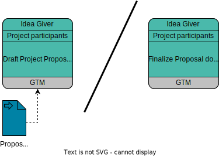
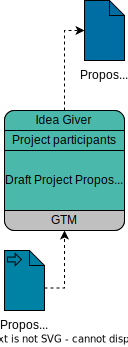
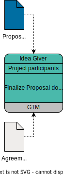

Writing A Project Proposal
Responsible |
|
|---|---|
Involved |
|
Steps |
 |
TL;DR |
|
The Proposal Document
The Project Proposal is a written document that is submitted to the TSC for project approval before any project at ASAM may start.
All committed participants (the Idea Giver, the Proposal Submitter, and all prospective Workgroup Members) can participate in writing the proposal document (the Proposal Submitter actually has to participate in the finalization step).
See The Proposal Document for more information on the document and its intended contents.
How To Contribute
|
You must first complete the Minimum Required Setup before you can participate in and contribute to any project. Participation in the creation of a Project Proposal follows the central Trunk-based Workflow at ASAM. If you want to learn more about this workflow, click the link. |
To contribute to a Project Proposal, project members can either contribute through GitLab issues or contribute directly in AsciiDoc.
However, at least one person must transfer all content to the AsciiDoc file eventually.
Both ways of contribution can be performed without software installation directly through the respective web interface.
If you prefer to work on your local computer, see the list of recommended tools.
Contributing Through Issues
The content of a Proposal document shall be drafted and discussed through issues in the project’s issue board.
ASAM provides guidelines on how to contribute through issues on the page Proposal Phase Contribution Guidelines.
All participants must follow these guidelines.
Contributing Directly In AsciiDoc
The project may decide to contribute directly in AsciiDoc as well. However, content shall still be discussed and updated in issues as described in Contributing Through Issues.
When writing AsciiDoc, writers must follow the guidelines described in Contributing In AsciiDoc Files as well as the ASAM Editorial Guide.
Transferring Content To AsciiDoc
The content that is defined in the project’s issues must be transferred to AsciiDoc eventually. ASAM recommends that the project defines one or more writers responsible for this task.
When writing AsciiDoc, writers must follow the guidelines described in Contributing In AsciiDoc Files as well as the ASAM Editorial Guide.
ASAM Editorial Guide
ASAM provides an Editorial Guide containing the writing guidelines applicable to all ASAM documents. The current version of the Editorial Guide is located in the Project Guide Compendium.
The Editorial Guide is mandatory for all Technical Writers and recommended for users contributing content through issues.
Writing The Proposal Draft
Responsible |
|
|---|---|
Involved |
|
Step |
 |
TL;DR |
|
| The ASAM Office assists the writer(s) by giving advice with respect to ASAM guideline and best practices. |
Context
In case a new project is proposed, the first step is to create an Executive Draft for internal analysis.
Based on this draft, a rough Proposal Draft is then created that contains further details needed for the Proposal Workshop.
This Proposal Draft is later further expanded and detailed until it is ready for submission to the TSC.
| The more details you add initially, the easier it is for ASAM to understand and support your proposal and the deeper and more focussed the discussions in the workshops will be. |
Result
A valid Project Proposal is created that can be brought to decision by the TSC.
| The final Project Proposal document is generated based on Asciidoc files, but the initial executive draft may be a Word document. For proposal submission, the proposal document must be converted into the appropriate Asciidoc structure. |
Prerequisites
-
The idea has been proposed and approved in the Ideation Phase.
-
The proposal needs at least three (3) partner companies.
How
-
Access the project’s online repository through the link provided by your GTM
-
Optionally, check out the project repository or download the Executive Draft template and edit the AsciiDoc files directly.
You must update the content of each chapter’s issue regardless of if you write in the AsciiDoc files directly or not!
-
-
Fill in the default structure as follows (in the respective issues):
-
Add a comprehensive 'Executive Summary' outlining the general idea of the proposed project
-
Describe the reasons for this proposed project in the 'Motivation' section
-
Define a set of (initial) use cases in the 'Use Cases' section
-
(OPTIONAL) If you know of other standards this proposal relates to (ASAM or other), list them in the 'Relations to Other Standards or Organizations' section
-
-
(OPTIONAL) Create an initial structure for the section 'Technical Content' and fill write as much project specific content as possible
-
Discuss and optimize the document with your GTM
-
Transfer the issues' content to the project’s AsciiDoc files. The GTM will support you with this task, if needed. Note that you do not need to render the document manually. The repository’s pipeline will create the required documents as artifacts automatically when the changes are committed and pushed to the trunk. See How-To: Access Compiled Artifacts to learn more about pipeline artifacts and how you can access them.
| The sections 'Project Resources' and 'Project Plan' will be filled out at a later stage and do not need to be edited in this draft. |
Finalizing The Proposal
Responsible |
|
|---|---|
Involved |
|
Step |
 |
TL;DR |
|
Once the Proposal Workshop has taken place, the Proposal must be finalized.
To do so, the Proposal Submitter (and all other involved writers) shall consider the following input for finalizing the project proposal:
-
the existing Proposal draft
-
meeting minutes of the Proposal Workshop
-
relevant papers from concept projects (if any)
The Submitter shall estimate the work efforts of the project and create a milestone plan.
The duration of the plan shall not exceed 1.5 years.
The Office then checks the proposal document for formal compliance and understandability.
The proposal may contain a request for video conferencing support through the Office, if project group members originate from locations that would require long-distance (i.e. inter-continental) business trips to regularly participate at project meetings.
The Submitter shall send out the proposal to all participants of the Proposal Workshop (if this occurred) for review before submitting it.